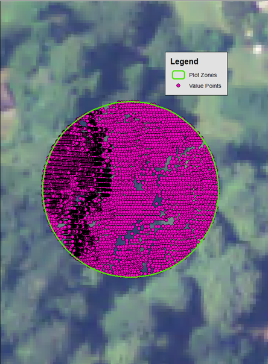

Canopy Height and LPI Change Along Strawberry Rock Trail, Trinidad, CA • Identifying Change over time (2010 - 2015)
This study uses Canopy Height Modelling (CHM) and Laser Penetration Index (LPI) as tools to identify change in canopy height and vegetation density between 2010 and 2015 along the Strawberry Rock Trail in Trinidad California. Strawberry Rock is a popular destination for local hikers located along privately owned logging property. This study identifies the true impact to canopy height and vegetation over time using lidar to obtain canopy height and vegetation density metrics.

Introduction and Objectives
The Strawberry Rock trail is popular amongst Humboldt County residents, and is located along Green Diamond Logging Company’s land in Trinidad, CA. Green Diamond has historically engaged in on and off logging operations throughout the area – already depleting the remaining old growth Sequoia Sempervirens. This study was intended to identify the change in canopy height and vegetation density over time, to identify the true impact or conservation practices that the Green Diamond holds to along the trail. The area has second growth Sequoia Sempervirens as well as younger generation growth redwoods due to selective cutting operations. Given this known change, I would like to see how rapidly the change of canopy height over time is detected using lidar, and if the area has experienced vegetation growth over time due to public concerns, or continued canopy loss, which is historically expected from the company.
The defining characteristics of the study area is the redwood forest (Sequoia Sempervirens) along the coast of Northern California in Trinidad, CA. This plot of land is privately owned by Green Diamond and is not part of the national parks system, but is still very important to the local community in regards to conserving the second growth trees.
Data and Collection
| Lidar Dataset | Projection | Point Spacing | 1st Returns | 2nd Returns |
|---|---|---|---|---|
| 2010 NOAA LAS | NAD83NSRS2007 California 1 ft | ~1.7 (Cell Size 8) | 17,159,518 - 80.83 | 3,491,683 - 16.45% |
| 2015 NOAA LAS | NAD83NSRS2007 California 1 ft | ~1.7 (Cell Size 8) | 16,115,861 – 37.91 | 9,010,327 – 21.20% |
2010 Lidar Point Cloud by Elevation
2015 Lidar Point Cloud by Elevation
Methods: Canopy Height Model (CHM)
- 1. LAS to Raster: Created 2010 and 2015 DTMs by filtering by second returns and using minimum values.
- 2. LAS to Raster: Created 2010 and 2015 DSMs by filtering second returns and maximum values.
- 3. Minus Tool: Subtracted DSM from DTM to find CHM for each year, and used the Extract by Mask Tool to create a common raster area for both datasets.
- 4. Minus Tool: Subtracted 2015 CHM from the 2010 CHM to get the CHM Change over time.
Minus Tool: 2015 CHM - 2010 CHM
Methods: Analyzing CHM and Laser Penetration Index (LPI)
- 1. LAS to Multipoint: Identified first returns for 2010 and 2015
- 2. Buffer and Clip: Created 100 meter buffer around plot zones (points) along the Strawberry Rock Trail area. Clipped my multipoints to the buffer zone to decrease my data size.
- 3. Multipoint to Singlepoint: Obtained singlepoint features.
- 4. Add XY Data, Field Calculator and Extract Values to Points: Obtained x, y, z, and raster values for data to obtain the height and canopy height.
- 5. Spatial Join: Joined singlepoints with extracted values to points so they were associated with the appropriate plots.
- 6. Excel Manipulation: Found the mean, 75th percentile, 95th percentile, max, and LPI for both 2010 and 2015 datasets, and then subtracted the results to find the difference/true change over time in the corresponding plot zones.
Plot Zones with 2010 and 2015 Value Points

Results and Discussion
In general, the trend of canopy height growth/change over time was not consistent across plots and is best explained plot by plot. On the other hand, the LPI did show consistent results. It showed that for 10 of the plots (83%), the LPI decreased from 2010 – 2015, which shows that the vegetation became more dense in those 5 years.
Change over Time: Plot 13 (Image Right)
The change in canopy height results from 2010 to 2015 show that the plot with the largest average height change over five years was plot 13. The mean height in this plot decreased by 33.43 ft, falling from an average of 79ft in 2010 to 46ft in 2015. Consistent with the loss of tree height, the LPI for plot 13 increased by .091 from 2010 to 2015; increasing from .029 to .121.
Change over Time: Plot 2
Plot 2 also showed significant change, in differing metrics. While the average canopy height decreased 12 ft between 2010 and 2015, starting at 33 ft in 2010 and lowering to 21 ft in 2015, the 95th percentile increased from 62 to 69.6 and the max height increased from 82 ft to 90ft. Therefore, untouched trees grew much taller, increasing the max and the 95th percentile over the years, but overall the average lowered, showing that across the whole plot there was loss of growth or selective cutting in the area. Additionally, there was an increase in LPI by .186, growing from .42 in 2010 to .228 in 2015. This confirms that there was loss in growth, or selective cutting in the areas since a higher LPI means there is less vegetation.
Change over Time: Plot 1
Plot 1 showed the largest change in LPI between 2010 and 2015 with a LPI decrease of .236; lowering from .245 in 2010 to .009 in 2015. Consistent with an increase in vegetation, the mean canopy height also rose 7.62ft, rising from 6.34ft in 2010 to 13.967 ft in 2015, Additionally, the percentiles and maximum height also rose from 2010 to 2015, showing that plot 1 showed the strongest growth of all plots between 2010 and 2015. The 95th percentile rose 4.885 from 23.657 in 2010 to 26.8 in 2015; and the maximum height rose 2.433 ft; rising from 114 ft in 2010 to 116.8 ft in 2015.
Plot 13
Plot 2
Plot 1
Conclusion
Altogether, the CHM and LPI average height results differed across the 13 plots, with 5 plots increasing in average height, and 8 decreasing in average height. The combined LPI results, which highlight a decrease in 10 of the plots shows that, shows that while there is not unanimous height change across plots, the overall density is in fact increasing between 2010 and 2015.
Results by plots show that there is likely a section in the western portion of the dataset, plot 2 that experienced significant loss of growth or selective cutting. This is consistent with logging patches in the area. Additionally, there was significant growth shown in plot 1 and LPI density growth in plot 13, which show that there is still respect for conservation in logging practices on private land in the area.
In the future, I would like to improve this analysis by obtaining observed values of the selected plots to create a RMSE with the predicted values shown here. Additionally, it would be helpful to identify coefficients to develop regression analysis to identify reasons for change, or areas of interest.